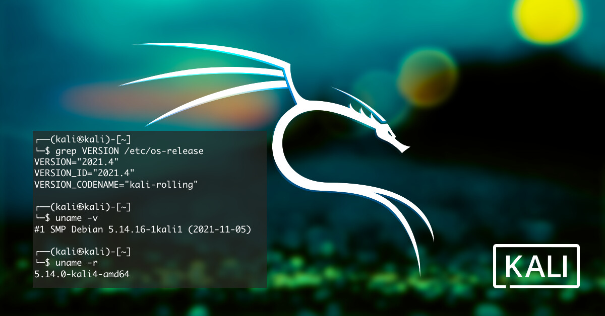

kali Linux
Kali Linux is a Debian-derived Linux distribution designed for digital forensics and penetration testing. It is maintained and funded by Offensive Security.Kali Linux has around 600 penetration-testing programs (tools), including Armitage (a graphical cyber attack management tool), Nmap (a port scanner), Wireshark (a packet analyzer), metasploit (penetration testing framework), John the Ripper (a password cracker), sqlmap (automatic SQL injection and database takeover tool), Aircrack-ng (a software suite for penetration-testing wireless LANs), Burp suite and OWASP ZAP web application security scanners, etc.

Kali Linux
It was developed by Mati Aharoni and Devon Kearns of Offensive Security through the rewrite of BackTrack, their previous information security testing Linux distribution based on Knoppix. Originally, it was designed with a focus on kernel auditing, from which it got its name Kernel Auditing Linux. The name is sometimes incorrectly assumed to come from Kali the Hindu goddess. The third core developer, Raphaël Hertzog, joined them as a Debian expert.
Kali Linux is based on the Debian Testing branch. Most packages Kali uses are imported from the Debian repositories. Kali Linux's popularity grew when it was featured in multiple episodes of the TV series Mr. Robot. Tools highlighted in the show and provided by Kali Linux include Bluesniff, Bluetooth Scanner (btscanner), John the Ripper, Metasploit Framework, Nmap, Shellshock, and Wget. The tagline of Kali Linux and BackTrack is "the quieter you become, the more you are able to hear", which is displayed on some backgrounds.